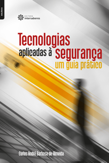

Tecnologia Assistiva
Este livro busca esclarecer sobre como a tecnologia assistiva pode auxiliar na construção de espaços igualitários de inclusão. Trabalha o papel social da escola, conceitos e classificações para compreender a tecnologia assistiva e o uso de recursos adaptados para alunos com deficiência visual e auditiva, por exemplo. Discute a importância da acessibilidade e as políticas públicas de tecnologia assistiva no Brasil. Desenvolve também considerações sobre desenho universal e questões ligadas às novas tecnologias.
Saiba mais
Tecnologia da Informacão e da Comunicacão
Este livro reúne artigos de profissionais e especialistas de expressão, que apresentaram experiências, reflexões, análises, estratégias e exemplos concretos no II Seminário Nacional de Tecnologia da Informação e da Comunicação Aplicada à Gestão dos Negócios e Programas Sociais, promovido pela Fundação Getúlio Vargas. Indicado tanto para estudantes de administração e tecnologia como para administradores e gestores de TI, os textos oferecem um amplo leque de informações que permitem ao leitor obter uma visão abrangente das possibilidades e dos desafios da TI dentro da gestão empresarial e pública.
Saiba mais
Tecnologia e Fontes Alternativas de Energia
Este livro explora discussões sobre fontes renováveis, convencionais e alternativas de energia, contemplando a energia hídrica, gás natural, energia nuclear, geradores a diesel e etanol, e bombas de calor. Aprofunda aspectos sobre a energia solar térmica e a energia eólica, seu emprego, tipologia de equipamentos utilizados, vantagens e desvantagens. Trata ainda de questões sobre resíduos urbanos, energia oceânica das marés e sistemas inteligentes.
Saiba mais
Tecnologias Aplicadas à Seguranca - Um Guia Prático

Esta obra apresenta as tecnologias mais relevantes no contexto da segurança pública e privada e proporciona ao leitor compreender aspectos fundamentais da aplicação prática dessas ferramentas, ajudando-o a refletir sobre diversos aspectos da utilização de sensores e alarmes e do desenvolvimento de sistemas de proteção perimetral, sistemas de circuito fechado de televisão e sistemas de controle de acesso.
Saiba mais
Tecnologias Aplicadas à Mobilidade Urbana
O aumento da população nas áreas urbanas e o consequente espraiamento das cidades são fenômenos crescentes que impactam diretamente a mobilidade. Nesse contexto, como atender de maneira consciente e sustentável às crescentes demandas de mobilidade dos centros urbanos?
Esta obra busca discutir conceitos, soluções e ferramentas que são essenciais no caminho para responder a esse questionamento. No entanto, a resposta não é fácil ou pronta; a única certeza é a de que uma cidade só alcançará esse objetivo quando a acessibilidade a seu espaço acontecer de modo democrático, seguro e eficiente. E as soluções tecnológicas oferecem inúmeras possibilidades de contribuição para tornar esse cenário real, universalizando as cidades e garantindo mobilidade a todas as pessoas.
Saiba mais
Tecnologias de Geoinformacão para Representar e Planejar o Território Urbano
O livro apresenta ampla abordagem sobre as mais importantes possibilidades de aplicação das tecnologias da geoinformação, o geoprocessamento, para análise, planejamento e gestão do território. Apresenta estado da arte para fomentar discussões e reflexões sobre um contexto muito contemporâneo e em expressiva dinâmica de transformação. Discute questões sobre métodos, técnicas, potencialidades de aplicações e desdobramentos previstos nas temáticas de geoprocessamento. Apresenta os temas de infraestrutura de dados espaciais, mapeamentos por dados originados em mídias sociais, visualização da informação e a importância dos códigos compartilhados para a compreensão das decisões em paisagens coletivas. Seleciona os modelos de análise espacial mais interessantes para o emprego das análises diagnósticas e prognósticas sobre o território. Defende a importância de claros processos metodológicos para apoio à tomada de decisões, para inclusão de diferentes atores e representantes da sociedade, com vistas à ampla orquestração do planejamento e gestão do território.
Saiba mais